Fit Shirasawa Dataset without diagonal constraint
David Gerard
January 10, 2018
Abstract
I modified mupdog to not constrain the corrlation matrix to have a diagonal of ones. Here, I will test out how it performs on the Shirasawa SNPs.
Analysis
Fit Shirasawa SNPs
library(tidyverse)
library(mupdog)
library(corrplot)refmat <- as.matrix(read.csv("/home/david/Code/reproduce_genotyping/Output/shirasawa_snps/example_refcounts.csv", row.names = 1))
sizemat <- as.matrix(read.csv("/home/david/Code/reproduce_genotyping/Output/shirasawa_snps/example_readcounts.csv", row.names = 1))
mout <- mupdog::mupdog(refmat = refmat, sizemat = sizemat, ploidy = 6, verbose = TRUE,
control = list(obj_tol = 10^-5), num_core = 7)
saveRDS(mout, file = "../output/shir_fit/shir_fit_nodiag1.RDS")mout <- readRDS(file = "../output/shir_fit/shir_fit_nodiag1.RDS")The diagonal of the estimated covariance matrix is always smaller than 1. This might be the model saying they are related.
qplot(diag(mout$cor_mat), bins = 30,
main = "histogram of diagonal estimates of covariance matrix") +
theme_bw()There appears to be no specific groups.
uR <- cov2cor(mout$cor_mat)
corrplot(uR, method = "color", order = "hclust")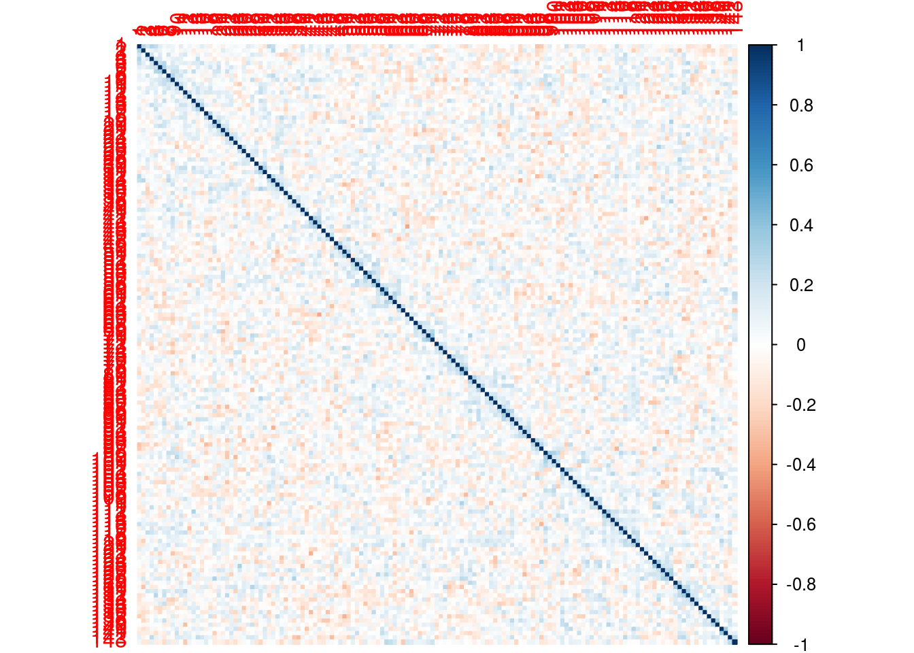
The histogram of correlations (using cov2cor) is almost exactly centered at 0 and spread between -4 and 4.
qplot(uR[upper.tri(uR)], bins = 30) + theme_bw()Plots look pretty good:
set.seed(2)
for (index in 1:20) {
pl <- plot(mout, sample(1:1000, 1))
print(pl)
}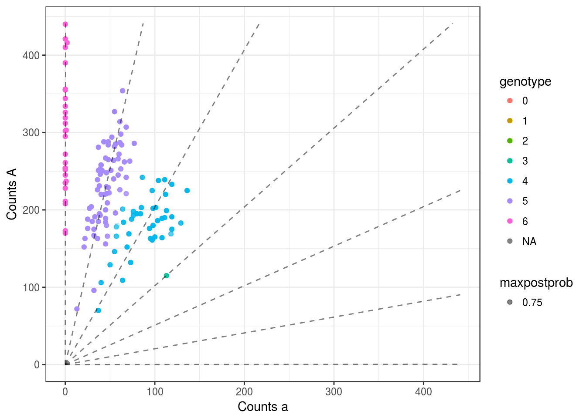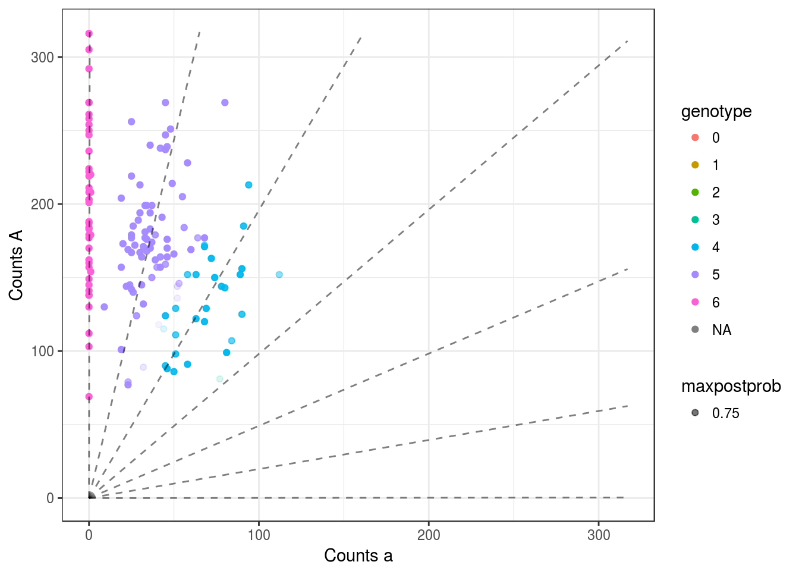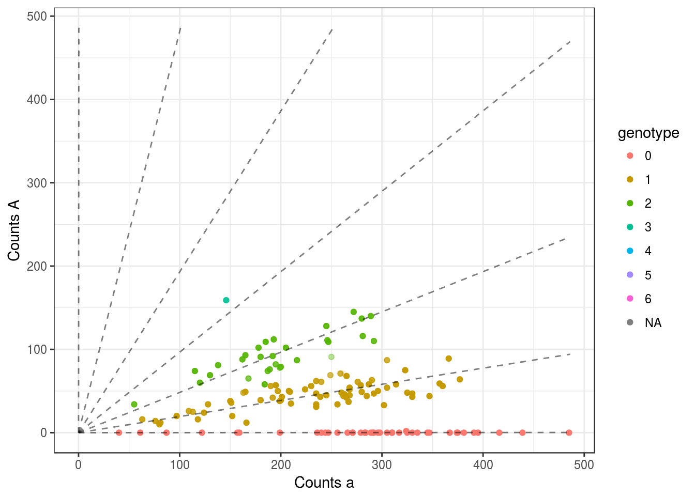 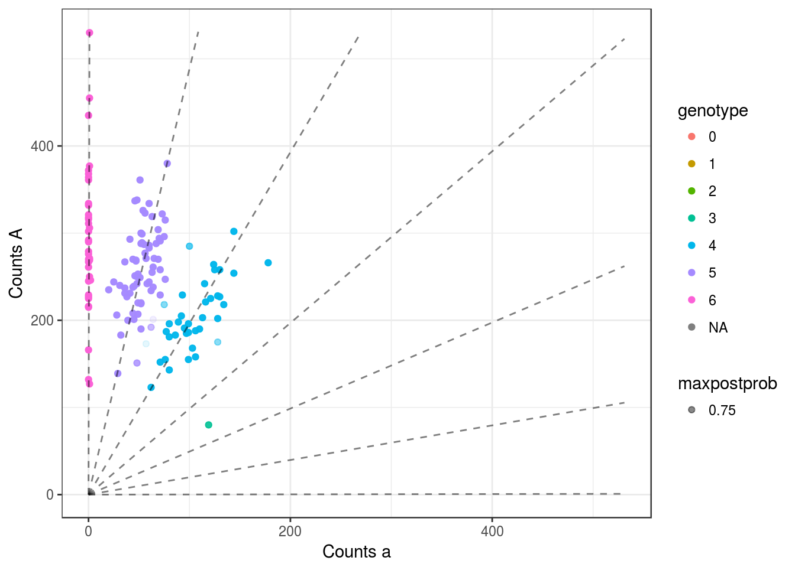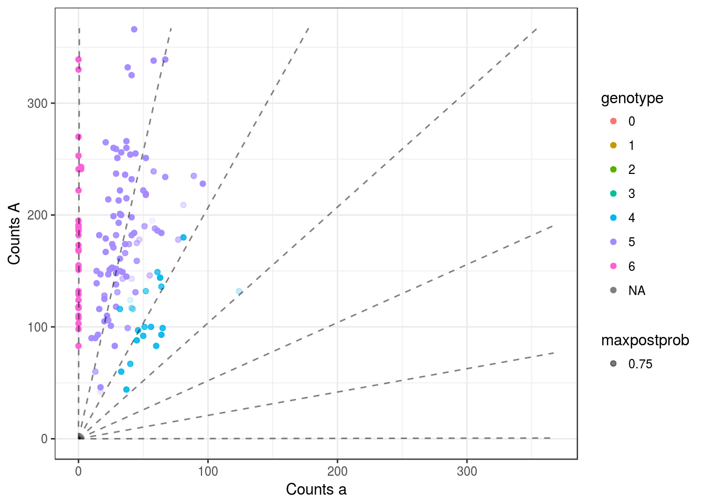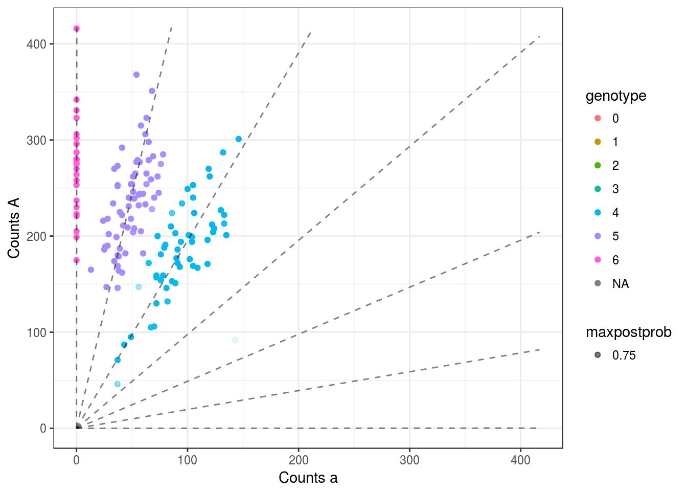
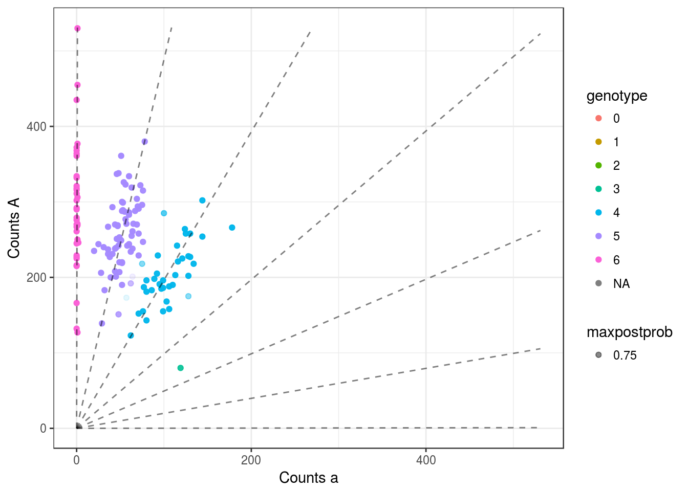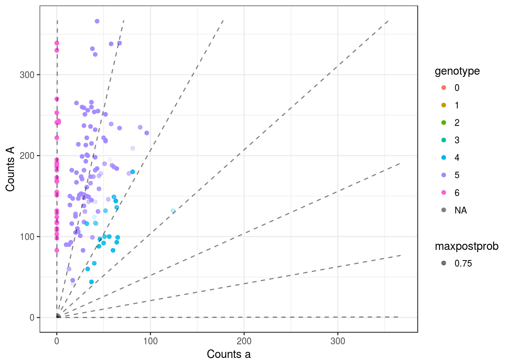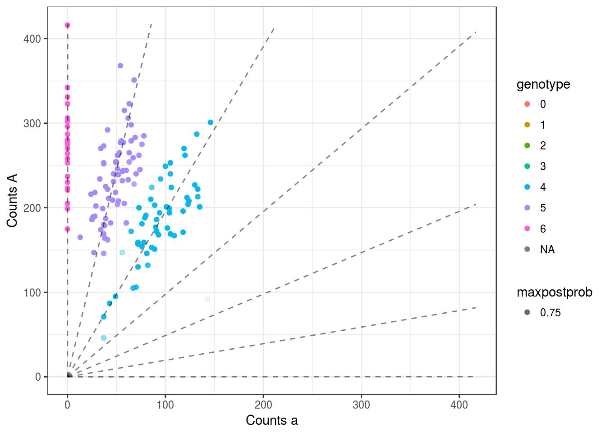
## Warning: Removed 1 rows containing missing values (geom_point).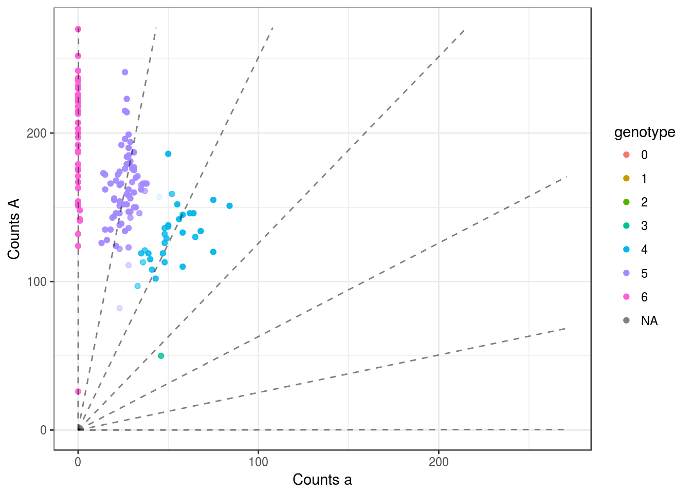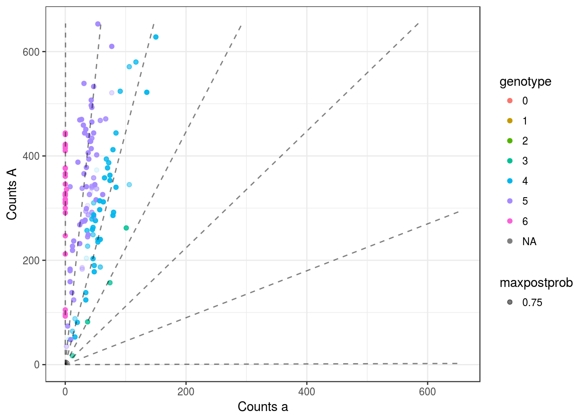
Let’s see if the allele frequencies make sense:
qplot(mout$allele_freq, bins = 100) + theme_bw() +
geom_vline(xintercept = 0:6/6, lty = 2)This is really cool. It is saying that the allele frequency is either 1/6 or 5/6. Shirasawa et al did screening to make sure that all of their SNP’s were did not have ratios beyond AAAAAa or Aaaaaa. Apparently there aren’t any monoallelic SNPs in these data.
emp_allele_freq <- colMeans(mout$map_dosage) / 6
qplot(mout$allele_freq, emp_allele_freq) + theme_bw() +
geom_vline(xintercept = 0:6/6, lty = 2) +
geom_hline(yintercept = 0:6/6, lty = 2)Let’s look at the weird 0.75 allele-freq SNP (doesn’t look too bad).
weird_snp <- which.min((mout$allele_freq - 0.75)^2)
plot(mout, weird_snp)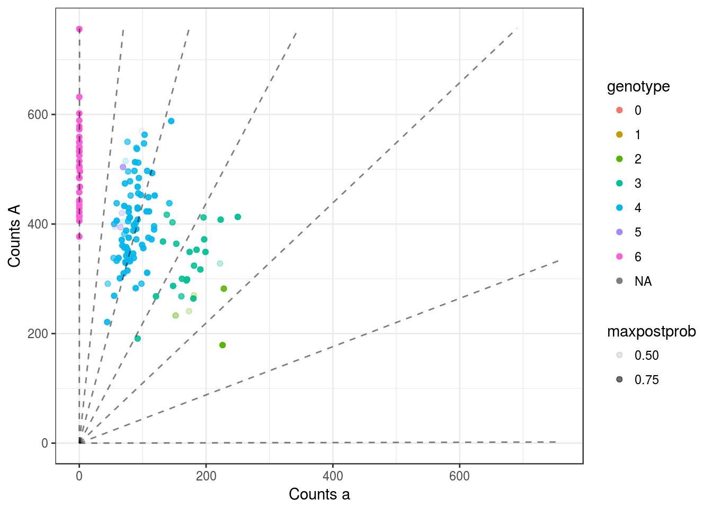
The parent is the individual that got the tiny variance estimate. Which makes super sense — in these data they always have allele AAAAAa or Aaaaaa!
diag(mout$cor_mat)[1]## [1] 0.0131This R Markdown site was created with workflowr